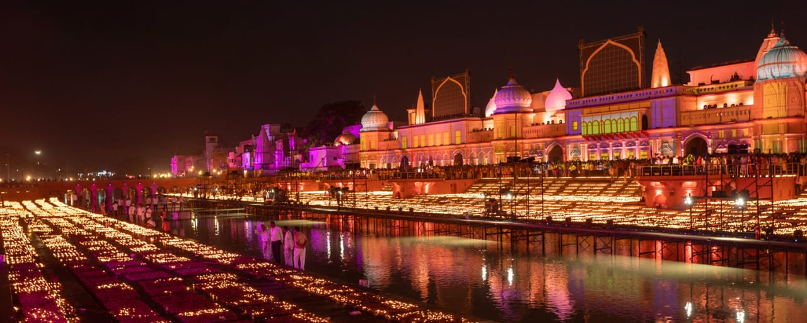
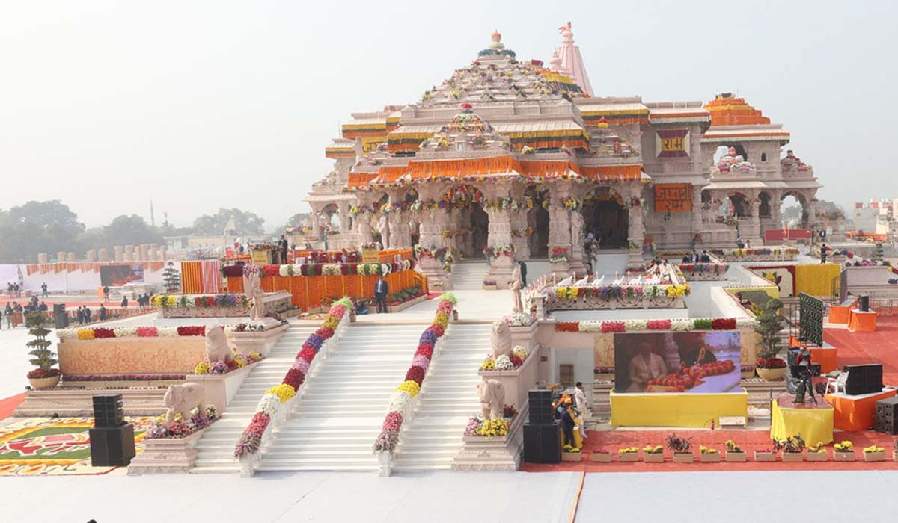
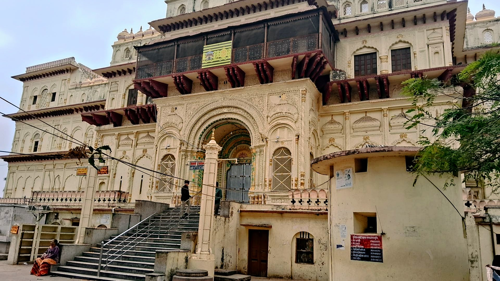
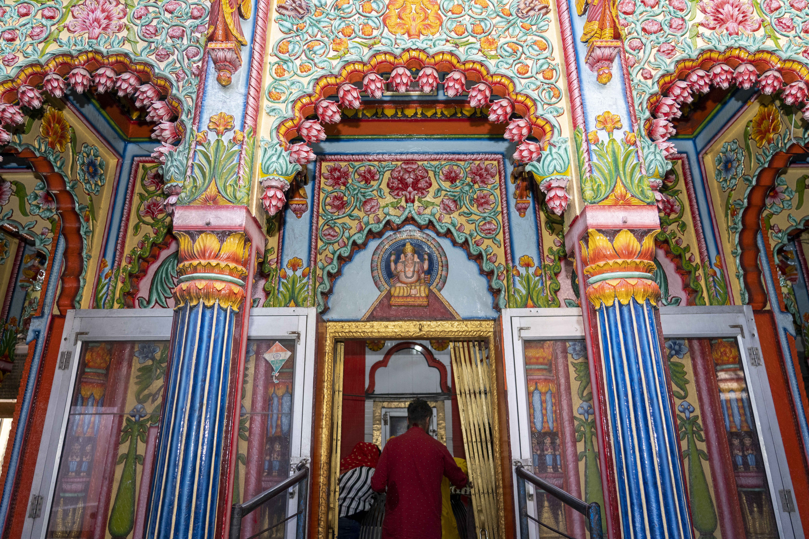

Uttar Pradesh
A Glimpse of the Entire Nation
Ayodhya: The Birthplace of Lord Rama

Ayodhya is a city situated on the banks of the holy river Saryu and is located in the northern region of India. In the Indian state of Uttar Pradesh, It is the headquarter of Ayodhya district and Ayodhya division. Ayodhya is also known as
Saket, it is an ancient city of India, is the Birthplace of Bhagwan Shri Ram and
setting of the Great Epic Ramayana. Ayodhya used to be the capital of the ancient
Kosala Kingdom. It has an average elevation of 93 meters and (305 feet).
Owing to the belief as the birthplace of Bhagwan Shri Ram, Ayodhya(awadhpuri) as
regarded as first one of the seven most important pilgrimage sites (mokshdayini
sapt puris) for hindus.
Ayodhya is not just a place it is an emotion. People are emotionally attached to
it. The temple and the idol of Ram Lala is just as wonderful as the sparkling
lights at mid night....as the first rain of the season...as the flower blooms in
spring, even much better than these. When you enter in Ayodhya, it will be felt
like that you are back at home at the safest place. When you see Ram Lala you
will feel immense emotion like your all worries are gone, like he just lift your
all sorrows to himself and give you all the love...just a glimpse of him make
your all life much better than before.
Ayodhya At present, is situated at a distance of about 134kms from Gorakhpur and
7kms from Faizabad, Ayodhya experiencing a massive surge in visitors numbers, a
boom in religious tourism, and a significant economic impact due to the
inauguration of the Ram Temple, making it Uttar Pradesh's top tourist destination
in 2024.
The place attracts a large number of devotees and tourists on the daily basis.
The most important religious place are:
Lord Ram Temple:The Majestic Temple known as Ayodhya Ram Mandir situated in the holy city of Ayodhya. This temple built at the birthplace of hinduism's foremost deity, Rama, it is called Ram Janambhoomi. There have been long-standing disagreements and debates around the Ayodhya Ram mandir, that involve both political and religious dimensions. Recently inaugurated, the Ayodhya Ram Mandir is thought to be the precise location of Lord Rama's birth. It has been said that his ancestors made a temple there to honour his life and Birth.

Saryu River: The Saryu River is the sacred river flowing through Ayodhya, Uttar Pradesh, revered in the Hindu scriptures like the Ramayana and Rigveda. It is deeply intertwined with the city's cultural, spiritual and historical identity. It holds the status of MokshDayini. Devotees gather on its bank for purification rituals, meditation, offerings and viewing the river as a symbol of eternal life and a source of spiritual renewal. Beyond its spiritual significance, the river's water have supported Ayodhya's Prosperity by enabling agriculture and serving as a vital waterway for trade and transportation.

Hanuman Garhi:It is Hindu Temple of Hanuman in Uttar Pradesh, India. It is located in Ayodhya, it is one of the most important temple in the city. It is 1kms away from Ayodhya Railway Station. It is believed that Lord Hanuman (Pawan Putra) lived here guard Ayodhya. You will find here a beautiful idol of Bal (Young) Hanuman sitting on Lap of Maa Anjani at the main temple. A very significant belief, as well as a custom here, is that before worshipping Lord Rama, one must visit Hanuman Garhi and venerate Lord Hanuman first. Hanuman ji is considered as ardent devotee (Bhakt) of Lord Rama and he is one of the avatars of Lord Shiva. It is located only 1kms away from Ram Janambhoomi.

Kanak Bhawan: It is a famous Hindu Temple in Ayodhya, dedicated to Lord Rama and Goddess Sita, believed to be their private palace gifted by Queen Kaikeyi after their marriage. It is located in the heart of Ayodhya, to the northest of Ram Janambhoomi. One of the fascinating facts about this mandir is that the whole renovation is done by muslim workers. The tourists shall find the idols of three deities inside this Bhawan. The biggest ideal is named Kanak Bihari, normal-sized is named Manak Bihari and the smallest idol is named Jugal Bihari.

Ram Ki Paidi: It is a Prominent set of 25 bathing ghats on the bank of Saryu River in Ayodhya, Uttar Pradesh, built in 1984 to provide a sacred bathing site for Lord Ram devotees. There were changing places available nearby. It is 3kms away from Ayodhya Railway station. The Ghats were renovated and are now a more convenient space for pilgrims. You May Experience the vibrant atmosphere during Festivals like Diwali, which include the grand lighting events. Visit at Night to see the riverfront beautifully floodlit.

Shri Nageshwarnath Temple: It is a Shiva Temple in Ayodhya, dedicated to Lord Nageshwarnath, believed to have been established by Kush, a son of Lord Ram, for a Naga Women from the Saryu River. The temple is situated on the bank of the river Saryu. The temple is the major pilgrimage site and attracts large crowds, especially during the festival of Shivratri, which is celebrated with a procession. Other festivals celebrated here include Kush Jayanti and the first Monday of Sawan.

Best time to visit Ayodhya
The time to visit is in between October and March. The weather is cool and
perfect for exploring. These Months are also great because many festivals happens
during this time like: Deepotsav and Ram Navami in Ayodhya.
How to visit Ayodhya
To visit Ayodhya, you can fly to nearby airports like Gorakhpur or Lucknow, then
take bus or Taxi to Ayodhya. You can also travel by train to Ayodhya Cantt or
Ayodya Station or take a bus or private Taxi from major cities like Lucknow,
Varanasi or Gorakhpur. Once you visit Ayodhya, use local transport like E-
rickshaws, Auto-rickshaws or rapido ride are affordable and readily available for
moving around the cities as per your comfort. Many important sites and temples
are within walking distances of each other, making it a viable way to explore the
city.
More significant locations around Ayodhya
There are few more beautiful places in Ayodhya like, Lata Chawk, Ram Katha
Museum, Queen- Heo Memorial Park, Gulab Bari Garden, Jain Shrines, Dasharath
Mahal and Sita Rasoyiaa. This places shows the history of Ayodhya through
crumbling ruins of old houses and items which are paces in museum. If you want to
know more about Ayodhya and about its history you should visit these places for
sure. These places are nearest to Ayodhya so you can take auto-rickshaw or
rapido-ride to reach there.